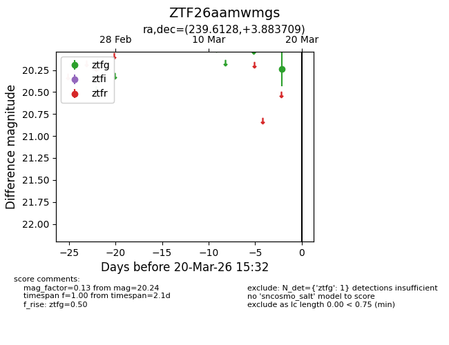
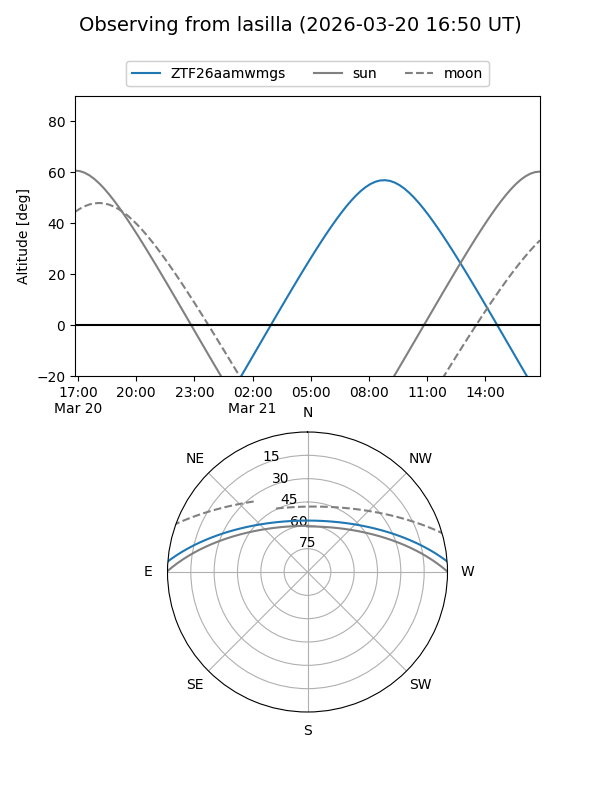
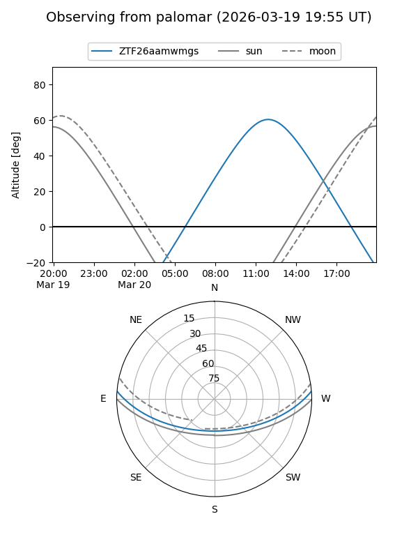

ZTF26aamwmgs
Target ZTF26aamwmgs at 2026-03-20 15:34
Aliases and brokers:
FINK: link
Lasair: link
ALeRCE: link
alt names
ZTF26aamwmgs (ztf,fink_ztf)
Coordinates:
equatorial (ra, dec) = 239.6128,+3.88371
equatorial (HMS+DMS) = 15:58:27.07,+03:53:01.35
galactic (l, b) = (13.8488,+39.73603)
Flags:
Photometry:
last ztfg=20.24
1 ztfg detections
Lightcurve

Visibility


Additional plots